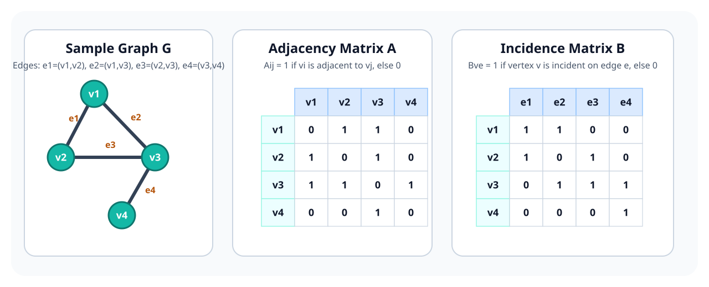

Basic Graph Objects
Graph, Vertices, and Edges
where \(V\) is the set of vertices and \(E\) is the set of edges. In a simple undirected graph, edges are unordered pairs of distinct vertices, and there are no parallel edges or self-loops.
Path and Cycle
A path is a sequence of distinct vertices \(v_0,v_1,\dots,v_k\) such that each consecutive pair is connected by an edge.
A cycle is a closed path of length at least 3.
Clique
A set \(S \subseteq V\) is a clique if every pair of distinct vertices in \(S\) is adjacent.
The complete graph on \(r\) vertices is denoted by \(K_r\).
Bipartite Graph
A graph is bipartite if its vertex set can be partitioned into two disjoint parts \(L\) and \(R\) such that every edge has one endpoint in \(L\) and one endpoint in \(R\).
The Petersen Graph
The Petersen graph is a famous 10-vertex, 15-edge graph that serves as a compact counterexample in many results. It is 3-regular, connected, and non-planar. Even when a graph looks highly symmetric, its global structure can still be subtle.
Graph Representations
Adjacency Matrix
If \(V=\{v_1,\dots,v_n\}\), the adjacency matrix \(A\) is the \(n\times n\) matrix defined by
For an undirected simple graph, the adjacency matrix is symmetric and has zeros on the diagonal.
Incidence Matrix
If \(E=\{e_1,\dots,e_m\}\), the incidence matrix \(B\) is the \(n\times m\) matrix where
In a simple undirected graph, each column of \(B\) contains exactly two 1s.
Worked Representation Example

The picture makes it easy to see the difference between the two encodings:
- the adjacency matrix records which vertex pairs are neighbors,
- the incidence matrix records which vertex-edge pairs touch each other.
When Each Representation Is Useful
| Representation | Good For |
|---|---|
| Adjacency matrix | Fast edge lookups, dense graphs, linear algebraic reasoning |
| Incidence matrix | Degree arguments, edge-based formulations, flow and cut viewpoints |
Chromatic Number and Connectivity
Chromatic Number
The chromatic number \(\chi(G)\) is the minimum number of colors needed to color the vertices so that adjacent vertices receive different colors.
Clique Size Gives a Lower Bound
If \(\omega(G)\) denotes the size of the largest clique in \(G\), then
This is because all vertices of a clique must receive distinct colors.
Connectivity
A graph is connected if every pair of vertices is joined by a path. If not, the graph splits into connected components.
- A connected graph with no cycles is a tree.
- A vertex whose removal disconnects the graph is called a cut vertex.
- Connectivity captures how robust the graph is under deletions.
A Basic Tree Fact
This identity is one of the most frequently used counting facts in elementary graph proofs.
Bipartite Graphs and Even Cycles
Even-Cycle Property
If \(G\) is bipartite, then every cycle in \(G\) has even length.
- In a bipartite graph, every step alternates between the two parts \(L\) and \(R\).
- Starting in \(L\), after one edge we are in \(R\), after two edges back in \(L\), and so on.
- A cycle must return to its starting part, so it must use an even number of edges.
Characterization by Odd Cycles
A graph is bipartite if and only if it has no odd cycle.
The backward direction comes from assigning colors by parity of distance from a chosen root in each connected component.
Examples
| Graph | Bipartite? | Reason |
|---|---|---|
| Path \(P_n\) | Yes | Alternate colors along the path |
| Even cycle \(C_{2k}\) | Yes | Two-coloring works around the cycle |
| Odd cycle \(C_{2k+1}\) | No | It forces a color conflict at the last edge |
Basic Graph Properties
Handshaking Lemma
Each edge contributes exactly 2 to the total degree count, one for each endpoint.
Immediate Consequences
- The number of odd-degree vertices in a graph is even.
- A simple graph on \(n\) vertices has at most \(\frac{n(n-1)}{2}\) edges.
- If a graph is bipartite with parts \(L\) and \(R\), then \(|E| \le |L||R|\).
Quick Structural Reminders
- Trees are minimally connected: removing any edge disconnects them.
- Cliques force many colors, because pairwise adjacent vertices cannot share a color.
- Matrix representations let us move between combinatorial and algebraic viewpoints.
Takeaway
These properties are the first tools to try when proving graph identities, checking whether a graph can be bipartite, or designing reductions from one graph problem to another.